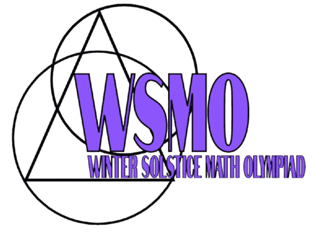

Winter Solstice Math Olympiad (WSMO)
Each December
Speed, Accuracy, Team, and Tiebreaker rounds.
Two free online math contests a year for students 18 and under, written and run by students.
WSMO runs each December and SSMO each June. Dates and registration links are announced on our Discord first.

Each December
Speed, Accuracy, Team, and Tiebreaker rounds.

Each June
The same rounds as WSMO, plus a team Relay Round.
Solstice Math Olympiads (SMO) was started in 2021 by a group of middle school students who loved competition math.
The first contest had about 50 participants; hundreds of students from the U.S. and abroad have competed since.
All answers are integers, and difficulty ranges from early AMC 8 to late AIME.